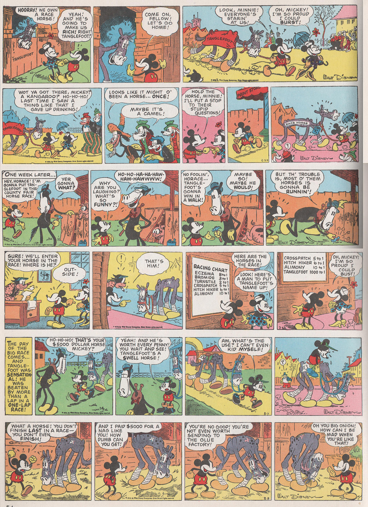
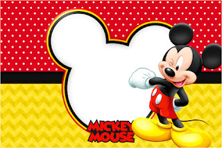

Mickey Mouse is an American cartoon character co-created in 1928 by Walt Disney and Ub Iwerks. The longtime mascot of The Walt Disney Company, Mickey is an anthropomorphic mouse who typically wears red shorts, large yellow shoes, and white gloves. Taking inspiration from silent film personalities such as Charlie Chaplin's Tramp, Mickey is traditionally characterized as a sympathetic underdog who gets by on pluck and ingenuity in the face of challenges much bigger than himself.[2] The character's status as a small mouse is personified through his diminutive stature and falsetto voice, the latter of which was originally provided by Disney. Mickey is one of the world's most recognizable and universally acclaimed fictional characters of all time. Created as a replacement for a prior Disney character, Oswald the Lucky Rabbit, Mickey first appeared in the short Plane Crazy, debuting publicly in the short film Steamboat Willie (1928), while it was third cartoon featuring Mickey to be produced, it was also one of the first sound cartoons. The character was originally to be named "Mortimer Mouse", until Lillian Disney instead suggested "Mickey" during a train ride. The character went on to appear in over 130 films, including The Band Concert (1935), Brave Little Tailor (1938), and Fantasia (1940). Mickey appeared primarily in short films, but also occasionally in feature-length films. Ten of Mickey's cartoons were nominated for the Academy Award for Best Animated Short Film, one of which, Lend a Paw, won the award in 1941. In 1978, Mickey became the first cartoon character to have a star on the Hollywood Walk of Fame. Beginning in 1930, Mickey has also been featured extensively in comic strips and comic books. The Mickey Mouse comic strip, drawn primarily by Floyd Gottfredson, ran for 45 years. Mickey has also appeared in comic books such as Mickey Mouse, Disney Italy's Topolino and MM – Mickey Mouse Mystery Magazine, and Wizards of Mickey. Mickey also features in television series such as The Mickey Mouse Club (1955–1996) and others. He appears in other media such as video games as well as merchandising and is a meetable character at the Disney parks. Mickey generally appears alongside his girlfriend Minnie Mouse, his pet dog Pluto, his friends Donald Duck and Goofy, and his nemesis Pete, among others (see Mickey Mouse universe). Though originally characterized as a cheeky lovable rogue, Mickey was rebranded over time as a nice guy, usually seen as an honest and bodacious hero. In 2009, Disney began to rebrand the character again by putting less emphasis on his friendly, well-meaning persona and reintroducing the more adventurous and stubborn sides of his personality, beginning with the video game Epic Mickey.[3]
Comics
Mickey first appeared in comics after he had appeared in 15 commercially successful animated shorts and was easily recognized by the public. Walt Disney was approached by King Features Syndicate with the offer to license Mickey and his supporting characters for use in a comic strip. Disney accepted and Mickey Mouse made its first appearance on January 13, 1930.[36] The comical plot was credited to Disney himself, art to Ub Iwerks and inking to Win Smith. The first week or so of the strip featured a loose adaptation of "Plane Crazy". Minnie soon became the first addition to the cast. The strips first released between January 13, 1930, and March 31, 1930, has been occasionally reprinted in comic book form under the collective title "Lost on a Desert Island". Animation historian Jim Korkis notes "After the eighteenth strip, Iwerks left and his inker, Win Smith, continued drawing the gag-a-day format."[37] In early 1930, after Iwerks' departure, Disney was at first content to continue scripting the Mickey Mouse comic strip, assigning the art to Win Smith. However, Disney's focus had always been in animation and Smith was soon assigned with the scripting as well. Smith was apparently discontent at the prospect of having to script, draw, and ink a series by himself as evidenced by his sudden resignation. Disney then searched for a replacement among the remaining staff of the Studio. He selected Floyd Gottfredson, a recently hired employee. At the time Gottfredson was reportedly eager to work in animation and somewhat reluctant to accept his new assignment. Disney had to assure him the assignment was only temporary and that he would eventually return to animation. Gottfredson accepted and ended up holding this "temporary" assignment from May 5, 1930, to November 15, 1975. Walt Disney's last script for the strip appeared May 17, 1930.[37] Gottfredson's first task was to finish the storyline Disney had started on April 1, 1930. The storyline was completed on September 20, 1930, and later reprinted in comic book form as Mickey Mouse in Death Valley. This early adventure expanded the cast of the strip which to this point only included Mickey and Minnie. Among the characters who had their first comic strip appearances in this story were Clarabelle Cow, Horace Horsecollar, and Black Pete as well as the debuts of corrupted lawyer Sylvester Shyster and Minnie's uncle Mortimer Mouse. The Death Valley narrative was followed by Mr. Slicker and the Egg Robbers, first printed between September 22 and December 26, 1930, which introduced Marcus Mouse and his wife as Minnie's parents. Starting with these two early comic strip stories, Mickey's versions in animation and comics are considered to have diverged from each other. While Disney and his cartoon shorts would continue to focus on comedy, the comic strip effectively combined comedy and adventure. This adventurous version of Mickey would continue to appear in comic strips and later comic books throughout the 20th and into the 21st century. Floyd Gottfredson left his mark with stories such as Mickey Mouse Joins the Foreign Legion (1936) and The Gleam (1942). He also created the Phantom Blot, Eega Beeva, Morty and Ferdie, Captain Churchmouse, and Butch. Besides Gottfredson artists for the strip over the years included Roman Arambula, Rick Hoover, Manuel Gonzales, Carson Van Osten, Jim Engel, Bill Wright, Ted Thwailes and Daan Jippes; writers included Ted Osborne, Merrill De Maris, Bill Walsh, Dick Shaw, Roy Williams, Del Connell, and Floyd Norman. The next artist to leave his mark on the character was Paul Murry in Dell Comics. His first Mickey tale appeared in 1950 but Mickey did not become a specialty until Murry's first serial for Walt Disney's Comics and Stories in 1953 ("The Last Resort"). In the same period, Romano Scarpa in Italy for the magazine Topolino began to revitalize Mickey in stories that brought back the Phantom Blot and Eega Beeva along with new creations such as the Atomo Bleep-Bleep. While the stories at Western Publishing during the Silver Age emphasized Mickey as a detective in the style of Sherlock Holmes, in the modern era several editors and creators have consciously undertaken to depict a more vigorous Mickey in the mold of the classic Gottfredson adventures. This renaissance has been spearheaded by Byron Erickson, David Gerstein, Noel Van Horn, Michael T. Gilbert and César Ferioli. In Europe, Mickey Mouse became the main attraction of a number of comics magazines, the most famous being Topolino in Italy from 1932 onward, Le Journal de Mickey in France from 1934 onward, Don Miki in Spain and the Greek Miky Maous. Mickey was the main character for the series MM Mickey Mouse Mystery Magazine, published in Italy from 1999 to 2001. In 2006, he appeared in the Italian fantasy comic saga Wizards of Mickey. In 1958, Mickey Mouse was introduced to the Arab world through another comic book called "Sameer". He became very popular in Egypt and got a comic book with his name. Mickey's comics in Egypt are licensed by Disney and were published since 1959 by "Dar Al-Hilal" and they were successful, however Dar Al-Hilal stopped the publication in 2003 because of problems with Disney. The comics were re-released by "Nahdat Masr" in 2004 and the first issues were sold out in less than 8 hours.[38]
Design
Throughout the earlier years, Mickey's design bore heavy resemblance to Oswald, save for the ears, nose, and tail.[39][40][41] Ub Iwerks designed Mickey's body out of circles in order to make the character simple to animate. Disney employees John Hench and Marc Davis believed that this design was part of Mickey's success as it made him more dynamic and appealing to audiences. Mickey's circular design is most noticeable in his ears. In animation in the 1940s, Mickey's ears were animated in a more realistic perspective. Later, they were drawn to always appear circular no matter which way Mickey was facing. This made Mickey easily recognizable to audiences and made his ears an unofficial personal trademark. The circular rule later created a dilemma for toy creators who had to recreate a three-dimensional Mickey. In 1938, animator Fred Moore redesigned Mickey's body away from its circular design to a pear-shaped design. Colleague Ward Kimball praised Moore for being the first animator to break from Mickey's "rubber hose, round circle" design. Although Moore himself was nervous at first about changing Mickey, Walt Disney liked the new design and told Moore "that's the way I want Mickey to be drawn from now on." Each of Mickey's hands has only three fingers and a thumb. Disney said that this was both an artistic and financial decision, explaining, "Artistically five digits are too many for a mouse. His hand would look like a bunch of bananas. Financially, not having an extra finger in each of 45,000 drawings that make up a six and one-half minute short has saved the Studio millions." In the film The Opry House (1929), Mickey was first given white gloves as a way of contrasting his naturally black hands against his black body. The use of white gloves would prove to be an influential design for cartoon characters, particularly with later Disney characters, but also with non-Disney characters such as Bugs Bunny, Woody Woodpecker, Mighty Mouse, Mario, and Sonic The Hedgehog. Mickey's eyes, as drawn in Plane Crazy and The Gallopin' Gaucho, were large and white with black outlines. In Steamboat Willie, the bottom portion of the black outlines was removed, although the upper edges still contrasted with his head. Mickey's eyes were later re-imagined as only consisting of the small black dots which were originally his pupils, while what were the upper edges of his eyes became a hairline. This is evident only when Mickey blinks. Fred Moore later redesigned the eyes to be small white eyes with pupils and gave his face a Caucasian skin tone instead of plain white. This new Mickey first appeared in 1938 on the cover of a party program, and in animation the following year with the release of The Pointer.[42] Mickey is sometimes given eyebrows as seen in The Simple Things (1953) and in the comic strip, although he does not have eyebrows in his subsequent appearances.[citation needed] Originally characters had black hands, but Frank Thomas said this was changed for visibility reasons.[43] According to Disney's Disney Animation: The Illusion of Life, written by former Disney animators Frank Thomas and Ollie Johnston, "The characters were in black and white with no shades of grey to soften the contrast or delineate a form. Mickey's body was black, his arms and his hands- all black. There was no way to stage an action except in silhouette. How else could there be any clarity? A hand in front of a chest would simply disappear."[44] Multiple sources state that Mickey's characteristics, particularly the black body combined with the large white eyes, white mouth, and the white gloves, evolved from blackface caricatures used in minstrel shows.[45][46][47][48][49] Besides Mickey's gloves and shoes, he typically wears only a pair of shorts with two large buttons in the front. Before Mickey was seen regularly in color animation, Mickey's shorts were either red or a dull blue-green. With the advent of Mickey's color films, the shorts were always red. When Mickey is not wearing his red shorts, he is often still wearing red clothing such as a red bandmaster coat (The Band Concert, The Mickey Mouse Club), red overalls (Clock Cleaners, Boat Builders), a red cloak (Fantasia, Fun and Fancy Free), a red coat (Squatter's Rights, Mickey's Christmas Carol), or a red shirt (Mickey Down Under, The Simple Things).